PyWENO API¶
WENO¶
- class pyweno.weno.WENO(order, cache=None, format='hdf5', smoothness=<function szs3 at 0x86b05a74>, grid=None)¶
Weighted Essentially Non-Oscillatory reconstruction.
The basic idea of WENO is to use a convex combination of several stencils to form the reconstruction of
 at cell
boundaries, and, if a stencil contains a discontinuity, its weight
at cell
boundaries, and, if a stencil contains a discontinuity, its weight
 should be close to zero. In smooth regions, using
several stencils will also serve to increase the order of
accuracy.
should be close to zero. In smooth regions, using
several stencils will also serve to increase the order of
accuracy.Briefly, a WENO reconstruction takes a convex combination of all
 defined by
defined by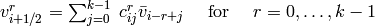
as a new approximation to 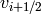 according to
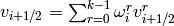
where we require
 and 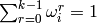.
and 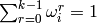.Instance variables:
- grid - spatial grid (‘’pyweno.Grid’‘)
- order - order of approximation
- c_m - matrix of coefficients
 (indexed as c_m[i,r,j])
(indexed as c_m[i,r,j]) - c_p - matrix of coefficients
 (indexed as c_p[i,r,j])
(indexed as c_p[i,r,j]) - w_m - matrix of optimal weights 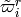 (indexed as w_m[i,r])
- w_p - matrix of optimal weights
 (indexed as w_p[i,r])
(indexed as w_p[i,r])
The constructor precomputes the reconstruction coefficients
of order order and the optimal weights
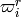 for the unstructered grid grid, or loads
them from a cache.Arguments (without cache):
- grid - spatial grid (Grid)
- order - order of approximation
Arguments (with cache):
- cache - cache file
- format - format of cache file (hdf5 by default)
- cache(output, format='hdf5')¶
- Cache spatial grid, reconstruction coefficients, and optimal weights.
- omega(q, vr_m, vr_p, omega_m, omega_p)¶
- Return arrays of adjusted weights.
- reconstruct(q, v_m, v_p)¶
Reconstruct q.
XXX: expand this...
XXX: quadrature?
- smoothness(q, sigma)¶
- Return array of the smoothness indicators of q.
Grid¶
- class pyweno.grid.Grid(boundaries=None, cache=None, format='hdf5')¶
Unstructured spatial grid (discretisation).
Instance variables:
- size - number of cells (usually denoted N)
- N - as above
- x - grid boundaries
The constructor precomputes cell centres and sizes from the cell boundaries boundaries.
Arguments: (without cache)
- boundaries - list of grid cell boundaries (eg,
‘’numpy.linspace(-1.0, 1.0, 20+1)’‘)
The cell boundaries do not have to be structured (ie, uniformly spaced).
Arguments: (with cache)
- cache - cache filename
- format - cache format (default is HDF5)
- average(f)¶
- Return cell averages of f.
- boundaries()¶
- Return array of N+1 cell boundaries.
- cache(output, format='hdf5')¶
- Cache grid.
- centers()¶
- Return array of N cell centers.
- centres()¶
- Return array of N cell centres.
- sizes()¶
- Return array of N cell sizes.
Stencil¶
- class pyweno.stencil.Stencil(grid=None, order=None, quad=None, shift=None, cache=None, format='hdf5')¶
Polynomial approximation stencil.
The cell averages 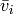 of a function
can
be used to approximate the value of at the cell
boundaries of the grid. In the interior of the grid, the
approximations and  are given
by
are given
by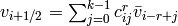
and
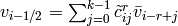
for 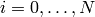 where
and
are the reconstruction coefficients.Instance variables:
- grid - spatial grid (‘’pyweno.Grid’‘)
- order - order of approximation (usually denoted
 )
) - k - as above
- shift - left shift (usually denoted
 )
) - r - as above
- c_p - matrix of coefficients
- c_m - matrix of coefficients
- quad - number of quadrature points
- c_q - matrix of coefficients used to approximate at quadrature points
The constructor precomputes the polynomial (of order order) reconstruction coefficients
based on stencils with
left shift shift in the interior of the grid (ie, k <= i <=
N-k). The matricies c_m and c_p are padded with zeros for
cells not in the interior of the grid.Arguments: (without cache)
- grid - spatial grid (‘’pyweno.Grid’‘)
- order - order of approximation
- quad - order of quadrature (defaults to no quadrature)
- shift - left shift of the stencil or ‘’None’‘
The default shift (computed when shift is ‘’None’‘) is a centered difference shift.
The left shift shift can take values from 0 to order-1.
Arguments: (with cache)
- cache - cache filename
- order - order of approximation
- shift - left shift of the stencil or ‘’None’‘
- format - cache format (default is HDF5)
- cache(output, format='hdf5')¶
- Cache reconstruction coeffs and quadrature coeffs (if defined).
- max_cell_size()¶
- Return array of the maximum sizes of the grid cells within each stencil.
- pyweno.stencil.reconstruction_coeffs(i, r, k, x, c, b='-')¶
Compute reconstruction coefficients
and store
the result in c (indexed as c[i,j]).This function calls the appropriate C function from pyweno.cstencil if available.
Arguments:
- i - cell number
- r - left shift
- k - order
- x - cell boundaries
- c - computed reconstruction coefficients
- b - boundry: ‘+’ or ‘-‘
- pyweno.stencil.xi_reconstruction_coeffs(i, r, k, xi, x, c)¶
Compute reconstruction coefficients
and store
the result in c (indexed as c[i,j]).This function calls the appropriate C function from pyweno.cstencil if available.
Arguments:
- i - cell number
- r - left shift
- k - order
- xi - point at which to reconstruct
- x - cell boundaries
- c - computed reconstruction coefficients
- pyweno.stencil.gauss_reconstruction_coeffs(i, r, n, k, x, g)¶
- Compute the reconstruction coeffs used to compute the polynomial approximation at the gaussian n-point quadrature points.